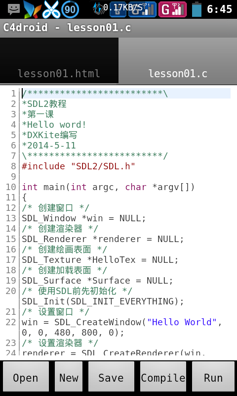

第一次写教程，不要介意啊，有什么意见或建议建议欢迎上贴吧@DXkite,本课我们要学的内容是创建窗口，首先要包含SDL2的头文件：
#include "SDL2/SDL.h"
头文件里包含了你将会用到的SDL2函数
申明主函数，注意记住主函数的参数，因为SDL2很霸道的把主函数也定义了，所以主函数必须这样申明int main(int argc,char *argv[])
int main(int argc,char **argv)
偷偷的告诉你，不用记那个参数名，，只要类型记得就行了:
int main(int,char**)
嘿嘿。我经常忘掉参数名这东西
吐槽一句，我刚刚用
int main()
也成功运行了。。。
申明完主函数后，我们可以在主函数里做事了。
首先，你需要申明一个
SDL_Window*
结构体,注意有个*号捏，还要在申明时初始化为NULL:SDL_Window* win=NULL;
在使用指针前初始化为NULL是一个很好的习惯，话说在申明变量是初始化也是个好习惯，我曾经被没有初始化变量弄得焦头烂额，呃呃，扯远了。这个干嘛用捏？看到结构体名字就知道是今天的主角窗口了。
窗口有了，那么我们要想在窗口上作画，要怎么办？嗯！到点了，我们想要在窗口上作画的话，就需要专门的画笔:Renderer;让我们来申明一个吧！
SDL_Renderer *renderer=NULL;
我试过为一个窗口创建两个画笔，但是有一个好像怎么也创建不了。。
申明有了，那让我们为窗口和画笔添加内容
win = SDL_CreateWindow("Hello World", 0, 0, 480, 800, 0);
renderer = SDL_CreateRenderer(win, -1, SDL_RENDERER_ACCELERATED);
关于上面用到的函数，你可以在官网Wiki查到。我就不详细说明了，要注意的是窗口的大小，在C4droid上它总是全屏的。所以在C4droid上，设不设置关系不大。
在申明了上面两个后，还需要申明一张画板：Texture。。
SDL_Texture *HelloTex = NULL;
这很好理解，你想想，你总不能直接在墙上画画吧？直接画？！！*^_^*小心小屁屁哦！靠！1:11了，睡觉，明天继续写。
与画板配对的当然是画纸Surface，
SDL_Surface *Surface = NULL;
为什么还要弄个画纸出来？不是有画板就够了吗？
答案是画板只能在一个墙上画，是一个墙专有物品，而画纸是通用物品，可以在更多地方用哦！因为你绘画不可能只在一个地方画吧？还有画好的东西可以通用，也可以省点力喽。。。
Surface = SDL_LoadBMP("/mnt/sdcard/hello.bmp");
HelloTex = SDL_CreateTextureFromSurface(renderer, Surface);
上面的代码是在画纸上作画和把画纸贴在画板HelloTex上。注意画纸(Surface)的加载函数，这里用到的是LoadBMP()也就是说只支持加载bmp格式的图片文件，这很重要，不然没发加载。。。。还有路径："/mnt/sdcard/hello.bmp"，
在SDL2下的图片文件都是要用绝对路径的，如果使用相对路径，则不能加载。
用完画纸后，由于不需要它了，就把它清理一下：
SDL_FreeSurface(Surface);
释放内存。
下面关键到了！，开始挥动大笔作画吧！熟悉清理手中的画笔，让它保持干净。
SDL_RenderClear(renderer);
然后再画：SDL_RenderCopy(renderer, HelloTex, NULL, NULL);
这里有两个NULL参数，第一个是截取画板上的区域，一个是截取墙上的区域，关于使用它，我会在第三课为大家介绍，还会介绍它的孪生兄弟给你哦！
要像图片在窗口上显示出来，必须要刷新一下！
SDL_RenderPresent(renderer);
好了，基本上可以了，再有就是
SDL_Delay(2000);
在窗口上停留2秒(2000毫秒)
最后是/* 销毁绘画表面 */
SDL_DestroyTexture(HelloTex);
/* 销毁渲染器 */ SDL_DestroyRenderer(renderer);
/*销毁窗口*/
SDL_DestroyWindow(win);
/*退出*/
SDL_Quit();
return 0;
清理收尾，这下，可以了。运行一下：

运行
本课源码下载
对于以上教程有什么意见过建议。欢迎欢迎上贴吧@DXkite
DXkite 于2014-6-22